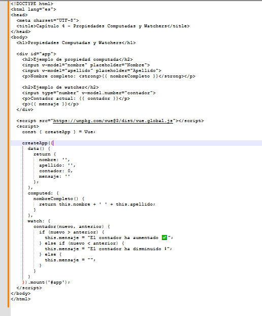

Capitulo IV: Propiedades computadas y Watchers en Vue.js
El objetivo de este capitulo es aprender a usar las propiedades computadas y los observadores (watch) para mejorar datos de forma inteligente y reactiva
¿Que son las propiedades computadas?
Las propiedades computadas son funciones que devuelven un valor calculado automáticamente en base a otros datos del componente. Vue las actualiza automáticamente cuando los datos que usan cambian. or ejemplo: Si tienes un nombre y un apellido, una propiedad computada puede combinar ambos en un “nombre completo”. En el siguiente ejemplo práctico crea un archivo llamado propiedad-computada.html y prueba el siguiente contenido:
Siguiente